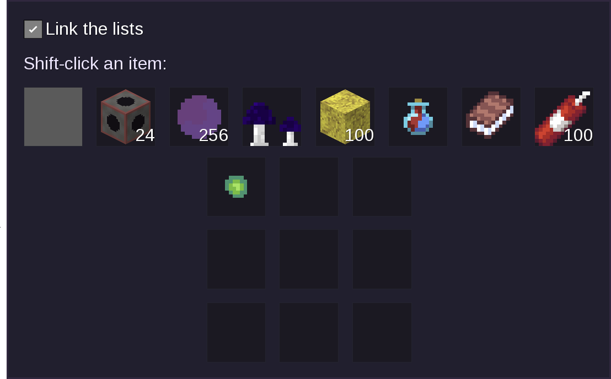
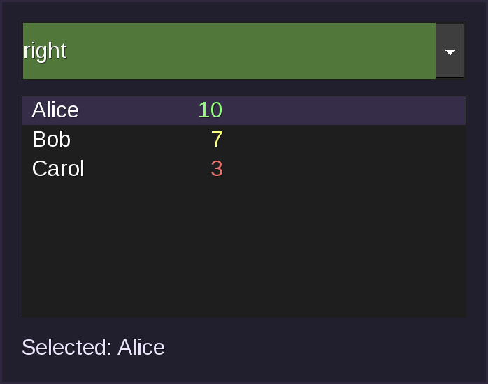
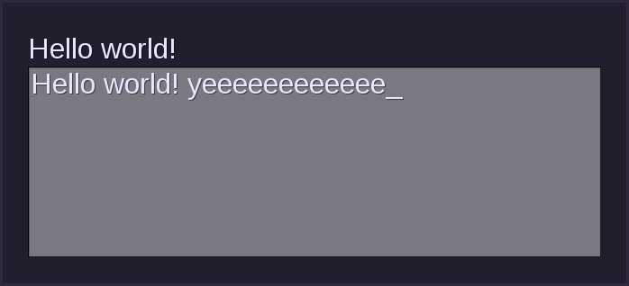

Functional Elements
These elements draw something or accept input. Do local gui = flow.widgets to use them, as described in Getting Started. Elements that arrange other elements are in Layout Elements, and the parameters that every element accepts are in Common Aspects.
gui.AnimatedImage
Shows an image that plays an animation. The texture must contain every frame stacked on top of each other (the first frame at the top), with all frames the same size, like the frames of an animated node texture. So a texture with 3 frames of 16x16 pixels is 16 pixels wide and 48 pixels high. w and h are the size of one displayed frame, and the picture is scaled to that size.
middle_* parameters turn on nine-slice drawing, see Nine-Slice Images. The cuts are measured in pixels of one frame.
The examples use a texture with three frames (red, green, blue), built with texture modifiers ([fill) so no file is needed.
Example
gui.AnimatedImage {
w = 2,
h = 2,
-- Only useful for styling.
name = "my_animated_image", -- Optional
-- Texture that contains all frames, stacked from top to bottom.
-- This one is 16 pixels wide and 48 high: three frames of 16x16.
texture_name = "[fill:16x48:white^[fill:12x12:2,2:#E74C3C"
.. "^[fill:12x12:2,18:#2ECC71^[fill:12x12:2,34:#3498DB",
-- Number of frames in the texture.
frame_count = 3,
-- Milliseconds each frame is shown for. 0 means no animation.
frame_duration = 500,
-- Frame to start on, the first frame is 1. Default 1.
-- This one starts on the green frame.
frame_start = 2, -- Optional
-- Nine-slice cuts, in pixels of one frame. Also optional: middle_y,
-- middle_x2 and middle_y2, see the live example below.
middle_x = 2, -- Optional
}
Live Example
The left one cycles through the frames and the right one is nine-sliced (middle_x = 2). Set frame_duration = 0 to stop on frame_start.
local FRAMES = "[fill:16x48:white^[fill:12x12:2,2:#E74C3C"
.. "^[fill:12x12:2,18:#2ECC71^[fill:12x12:2,34:#3498DB"
local form = flow.make_gui(function(player, ctx)
return gui.HBox {
gui.AnimatedImage {
w = 3, h = 3,
texture_name = FRAMES, frame_count = 3, frame_duration = 500,
},
gui.AnimatedImage {
w = 4, h = 2,
texture_name = FRAMES, frame_count = 3, frame_duration = 500,
middle_x = 2,
},
}
end)
gui.Background
Draws a picture behind everything else in the form: all backgrounds are drawn before any other element, whatever order they are in. The picture (texture_name) is stretched to w by h. If auto_clip is true, it is cut off at the edge of the form instead and w and h are ignored.
Usually not needed
Set bgimg on a container or the root element instead, see Padding.
Inside a gui.Stack, a gui.ScrollableVBox, or an embedded form, flow draws backgrounds without auto_clip as ordinary images.
Example
The background comes last in the list but is still drawn behind the button.
local form = flow.make_gui(function(player, ctx)
return gui.Container {
w = 6, h = 3,
{ type = "button", x = 1.5, y = 1, w = 3, h = 1, label = "In front" },
{
type = "background",
x = 0, y = 0, w = 6, h = 3,
texture_name = "[fill:16x16:white^[fill:12x12:2,2:#336699",
-- Cut off at the form edge, ignoring w and h.
auto_clip = false, -- Optional
},
}
end)
gui.Background9
Like gui.Background, but the picture is drawn as a nine-slice so that it can be stretched to any size without distorting its corners.
Example
The left background stretches the whole picture, so its border gets thick and blurry. The right one is a gui.Background9, so only the middle stretches.
local FRAME = "[fill:16x16:white^[fill:12x12:2,2:#336699"
local form = flow.make_gui(function(player, ctx)
return gui.HBox {
gui.Container {
w = 5, h = 3,
{ type = "label", x = 0.5, y = 1.5, label = "Background" },
{ type = "background", x = 0, y = 0, w = 5, h = 3, texture_name = FRAME },
},
gui.Container {
w = 5, h = 3,
{ type = "label", x = 0.5, y = 1.5, label = "Background9" },
{
type = "background9",
x = 0, y = 0, w = 5, h = 3,
texture_name = FRAME,
-- Cut 2 pixels from every side. Also optional:
-- middle_y, middle_x2 and middle_y2.
middle_x = 2,
},
},
}
end)
gui.Bgcolor
Sets the colors behind the form. This does the same thing as the bgcolor, fbgcolor, and bg_fullscreen options of the root element, which are explained in Experimental Features and are easier to use. fullscreen can be false, true, "both", or "neither".
Example
Pick a color to change the background of the form.
local form = flow.make_gui(function(player, ctx)
return gui.VBox {
gui.Bgcolor {
bgcolor = ctx.form.color or "red",
-- false, true, "both", or "neither".
fullscreen = false, -- Optional
-- Color of the area behind the form.
fbgcolor = "#00000080", -- Optional
},
gui.Dropdown {
name = "color",
items = { "red", "green", "blue", "purple" },
},
}
end)
gui.Box
Draws a solid rectangle of one color. Boxes have no natural size, so give them a w and h.
Box colors are semitransparent by default
Unlike everywhere else (see Colors), a hexadecimal color without an alpha value ("#RGB" or "#RRGGBB") is drawn with an alpha of 8C (140 out of 255, about 55% opaque) here. Add the alpha value ("#FF0000FF") to make it opaque. Color names such as "red" are not affected and are opaque unless you add an alpha value ("red#80"). Flow also draws the bgcolor of gui.HBox, gui.VBox, and other containers with a box, so the same applies to it.
Example
The first and last boxes are translucent, the other two are opaque:
gui.HBox {
-- #RRGGBB gets an alpha of 8C here.
gui.Box { w = 1, h = 2, color = "#FF0000" },
-- Add the alpha value to make it opaque.
gui.Box { w = 1, h = 2, color = "#FF0000FF" },
-- Color names are opaque unless you add an alpha value.
gui.Box { w = 1, h = 2, color = "red" },
gui.Box { w = 1, h = 2, color = "red#80" },
}
gui.Button
A clickable button showing label. Your on_event function is called when it is clicked. If you do not set w and h, the button is sized to fit the label (but never smaller than 1.6 by 0.8).
Buttons do not store a value in ctx.form, see Names and Values.
Example
gui.Button {
w = 6, -- Optional
h = 2, -- Optional
name = "my_button", -- Optional
label = "Hello world!", -- Optional
}
gui.ButtonExit
A button that closes the form when it is clicked. Your on_event function is still called before the form closes. In all other respects it works like gui.Button.
Example
gui.ButtonExit {
w = 6, -- Optional
h = 2, -- Optional
name = "my_button_exit", -- Optional
label = "Hello world!", -- Optional
}
gui.ButtonURL
A button that, when clicked, offers the player the choice of opening url in their web browser. url must start with http:// or https://. Your on_event function is also called. In all other respects it works like gui.Button.
Example
gui.ButtonURL {
w = 6, -- Optional
h = 2, -- Optional
name = "my_button_url", -- Optional
label = "Hello world!", -- Optional
-- Web address to offer to open.
url = "https://example.com",
}
gui.ButtonUrlExit
Like gui.ButtonURL, but the form also closes when the button is clicked. Unlike gui.ButtonURL, it does not get a size from its label, so w and h are required.
Example
gui.ButtonUrlExit {
w = 6,
h = 2,
name = "my_button_url_exit", -- Optional
label = "Hello world!", -- Optional
-- Web address to offer to open.
url = "https://example.com",
}
gui.Checkbox
A tick box with a text label. selected sets whether it starts ticked. If you give it a name, ctx.form[name] is true or false and is updated as soon as the player ticks or unticks it.
Checkboxes are sized automatically and do not accept w or h, see Which Elements Take w, h, min_w, and min_h.
Example
gui.Checkbox {
name = "my_checkbox", -- Optional
label = "Hello world!", -- Optional
selected = true, -- Optional
}
gui.Dropdown
A drop-down list that shows the currently selected item and lets the player pick another one from items (a list of strings). selected_idx is the number of the item that is selected at first (the first item is 1).
ctx.form[name] is the text of the selected item. If index_event = true it is the number of the selected item instead, which is easier to work with when two items have the same text or when the text is translated.
If you do not set w and h, the dropdown is sized to fit its longest item (but never smaller than 2 by 0.8). Item text cannot be coloured.
Example
gui.Dropdown {
w = 4, -- Optional
h = 0.8, -- Optional
name = "my_dropdown", -- Optional
-- List of choices.
items = { "Apple", "Banana", "Cherry" },
-- Number of the item selected at first.
selected_idx = 2, -- Optional
-- Store the item number in ctx.form instead of its text.
index_event = false, -- Optional
}
gui.Field
A single-line text box. label, if set, is shown above the box (flow leaves room for it automatically). default is the text it starts with.
ctx.form[name] is the text in the box. Newlines and other control characters are removed from it, but tabs are kept (a player can only get a newline into a field by pasting). See Security for the exact rules. The text is sent to the server when the player presses a button or Enter. To react to Enter, see Handling Enter Keypresses in Fields.
If you do not set w and h, the field is sized to fit its default text and label (but never smaller than 3 by 0.8).
Example
gui.Field {
w = 6, -- Optional
h = 2, -- Optional
name = "my_field", -- Optional
label = "Hello world!", -- Optional
-- Text the field starts with.
default = "Hello world!", -- Optional
-- Called when the player presses Enter.
on_key_enter = function(player, ctx) end, -- Optional
-- Close the form on Enter. Default false.
close_on_enter = false, -- Optional
-- Make "Done" on the mobile on-screen keyboard act like Enter.
enter_after_edit = false, -- Optional
}
gui.FieldCloseOnEnter
Sets whether pressing Enter in the field with this name closes the form.
Usually not needed
gui.Field has a close_on_enter parameter, and by default Enter does not close the form. See Handling Enter Keypresses in Fields.
Example
Type something and press Enter. While the checkbox is ticked, Enter also closes the form.
local form = flow.make_gui(function(player, ctx)
return gui.VBox {
gui.Field { name = "note", label = "Type something, then press Enter:" },
gui.FieldCloseOnEnter {
-- Name of the field.
name = "note",
close_on_enter = ctx.form.close or false,
},
gui.Checkbox { name = "close", label = "Close the form on Enter" },
}
end)
gui.FieldEnterAfterEdit
Experimental
This element only affects Android.
If enter_after_edit is true, pressing "Done" in the text input dialog of the field with this name counts as pressing Enter.
Usually not needed
gui.Field has an enter_after_edit parameter.
Example
gui.VBox {
gui.Field { name = "msg", label = "Edit me, then press Done" },
gui.FieldEnterAfterEdit {
-- Name of the field.
name = "msg",
enter_after_edit = true,
},
}
gui.Hypertext
Shows text that can be formatted (bold, colors, different sizes, images, ...) and can contain clickable links. The text is written in a small HTML-like language, which is described in Hypertext Markup. w and h are the size of the area that the text is wrapped to fit in.
If the markup contains <action name=...> links, ctx.form[name] is set to "action:" followed by the action name when the player clicks one.
Experimental
The <action> behaviour may change, see Links.
Example
gui.Hypertext {
w = 6,
h = 2,
-- Receives the clicked action, see above.
name = "my_hypertext", -- Optional
-- Formatted text, see "Hypertext markup".
text = "<big>Hello</big> <b>bold</b> <i>italic</i> " ..
"<style color='red'>red</style> world!",
}
gui.Image
Shows a picture, stretched to fit w by h. If you want to use one small texture for pictures of many sizes, use the middle_* parameters, see Nine-Slice Images.
Example
gui.Image {
w = 4,
h = 2,
-- Texture to draw. This one is a white border around a blue square,
-- made with texture modifiers so that no file is needed.
texture_name = "[fill:16x16:white^[fill:12x12:2,2:#336699",
-- Nine-slice cuts, in pixels of the texture. The border is 2 pixels
-- wide, so these keep it the same width however big the image is.
middle_x = 2, -- Optional
middle_y = 2, -- Optional
middle_x2 = -2, -- Optional
middle_y2 = -2, -- Optional
}
gui.ImageButton
A button that is drawn as a picture instead of the usual button face. The picture (texture_name) is stretched to w by h, and label is drawn on top of it. It works like gui.Button otherwise.
noclip: Allow the button to be drawn outside the form's area.drawborder: Draw the normal button border around the picture.pressed_texture_name: Picture to show while the button is held down.
Example
gui.ImageButton {
w = 6,
h = 2,
-- Picture to draw as the button. This one is a blue square, made with
-- a texture modifier so that no file is needed.
texture_name = "[fill:16x16:#3498DB",
name = "my_image_button", -- Optional
label = "Hello world!", -- Optional
noclip = false, -- Optional
drawborder = false, -- Optional
-- Picture to show while the button is held down (a red square).
pressed_texture_name = "[fill:16x16:#E74C3C", -- Optional
}
gui.ImageButtonExit
Like gui.ImageButton, but the form also closes when the button is clicked.
Example
gui.ImageButtonExit {
w = 6,
h = 2,
texture_name = "[fill:16x16:#3498DB",
label = "Close", -- Optional
}
gui.ItemImage
Shows the picture that is used for an item or node in inventories (item_name, such as "unifieddyes:colorium"), stretched to fit w by h.
Example
gui.ItemImage {
w = 2,
h = 2,
-- Registered item or node name.
item_name = "unifieddyes:colorium",
}
gui.ItemImageButton
A button that shows the inventory picture of an item or node (item_name). By default, the item's description is shown as a tooltip when the player hovers over the button, which you can replace with the tooltip parameter. It works like gui.Button otherwise.
Give each item image button a unique name
Otherwise its tooltip may not work. See Tooltips.
Example
gui.ItemImageButton {
w = 3,
h = 2,
-- Registered item or node name.
item_name = "unifieddyes:colorium",
name = "my_item_image_button", -- Optional
label = "Hello world!", -- Optional
}
gui.Label
Shows text.
Labels do not wrap
Labels do not wrap long lines automatically: use \n to start a new line and do not use labels for long paragraphs. For those, use gui.Hypertext, or a gui.Textarea without a name (which wraps its text and gets a scrollbar if the text is too long).
Labels are sized to fit their text, and flow ignores color escape sequences when it estimates the width. To make the text bigger or smaller, use the font_size style (for example style = {font_size = "*2"}), see Styling.
Example
gui.Label {
label = "Hello world!",
}
gui.List
Shows a grid of inventory slots, with the items of one inventory list in it. This is how you show the player's inventory, a chest, a furnace's input slots, and so on. To use a whole form as the player's inventory, see Using a Form as an Inventory.
inventory_location: Which inventory to show. Common values are"current_player"(the inventory of the player who has the form open),"nodemeta:X,Y,Z"(the inventory of the node at that position, for example"nodemeta:10,5,-3"), and"detached:name"(a detached inventory)."player:name"is the inventory of a specific player and is only ever sent to that player.list_name: The name of the list inside that inventory, such as"main"or"craft".wandh: How many slots wide and high to draw (whole numbers).
Slots are filled from left to right, then top to bottom, and the player can move items in and out of them. The list is only shown if the inventory has been sent to the player's client. Only as many slots as the inventory list has are drawn, even if w times h is larger.
Each slot is 1 by 1, with 0.25 between slots, so a list that is 8 slots wide and 4 high is 9.75 by 4.75 big. To change the slot size or spacing, use the size and spacing styles, see Lists in Styling.
Example
gui.List {
-- Which inventory to show.
inventory_location = "current_player",
-- Which list in that inventory to show.
list_name = "main",
w = 4,
h = 2,
-- Index of the first slot to draw. Unlike most numbers here, this starts
-- at 0. Default 0.
starting_item_index = 3, -- Optional
}
gui.Listcolors
Sets the colors of inventory slots. It is invisible, takes up no space, and should come before the gui.List elements it is for.
slot_bg_normal: Background color of a slot.slot_bg_hover: Background color of a slot while the mouse is over it.slot_border: Color of the border of the slots.tooltip_bgcolor: Default background color of item tooltips.tooltip_fontcolor: Default text color of item tooltips.
Only the first two are required. To use pictures instead of colors for slots, see Unsupported Features.
Example
Pick a theme, then hover over the slots to see both colors.
local themes = {
Green = { normal = "#2E7D32", hover = "#66BB6A" },
Blue = { normal = "#1565C0", hover = "#64B5F6" },
Red = { normal = "#B71C1C", hover = "#EF5350" },
}
local form = flow.make_gui(function(player, ctx)
local theme = themes[ctx.form.theme or "Green"]
return gui.VBox {
gui.Dropdown { name = "theme", items = { "Green", "Blue", "Red" } },
gui.Label { label = "Hover over a slot:" },
-- Color the lists that come after this.
gui.Listcolors {
slot_bg_normal = theme.normal,
slot_bg_hover = theme.hover,
slot_border = "#FFFFFF", -- Optional
tooltip_bgcolor = "#000000", -- Optional
tooltip_fontcolor = "#FFFF00", -- Optional
},
gui.List {
inventory_location = "current_player",
list_name = "main",
w = 8, h = 1,
},
}
end)
gui.Listring
Sets where items go when the player shift-clicks them. A ring is an ordered list of inventory lists that Luanti keeps for the form, which starts out empty. Every gui.Listring{inventory_location = ..., list_name = ...} adds one list to the end of the ring. When the player shift-clicks an item in a list that is in the ring, the item is sent to the next list in the ring. Lists that are not in the ring keep Luanti's default shift-click behavior.
A list can be added to the ring more than once. Luanti sends an item to the entry after the first entry of its own list, and later entries of the same list are only destinations. In a ring of main, craft, main, output, items from main go to craft, items from craft go to the second main, and items from output wrap around to the first main, so both craft and output send to main.
gui.Listring{} with no parameters adds the last two gui.List elements before it. It is invisible and takes up no space.
Example
Shift-click an item in either list to send it to the other one. Untick the checkbox to remove the ring and go back to Luanti's default.
local form = flow.make_gui(function(player, ctx)
return gui.VBox {
gui.Checkbox { name = "ring", label = "Link the lists", selected = true },
gui.List {
inventory_location = "current_player",
list_name = "main",
w = 8, h = 1,
},
gui.List {
inventory_location = "current_player",
list_name = "craft",
w = 3, h = 3,
},
-- Or name the lists explicitly (both parameters are optional):
-- gui.Listring { inventory_location = "current_player", list_name = "main" },
ctx.form.ring ~= false and gui.Listring {} or gui.Nil {},
}
end)

gui.Model
Shows a 3D model that the player can turn around with their mouse.
mesh: File name of the model, from themodelsfolder of any loaded mod.textures: The textures for the model, one for each of the model's materials in order.rotation_xandrotation_y: How far the model is turned at first, in degrees.continuous: Keep the model rotating by itself.mouse_control: Whether the player can rotate the model with their mouse. Defaults totrue.frame_loop_beginandframe_loop_end: The range of animation frames to play. Defaults to all frames.animation_speed: Frames per second to play the animation at. Defaults to0(no animation).
name is optional and only useful for styling.
Example
gui.Model {
w = 5,
h = 5,
padding = 0.5,
-- Only useful for styling.
name = "my_model", -- Optional
-- Model file name.
mesh = "voxelmodel.obj",
-- One texture for each material of the model. This one is a blue
-- square, made with a texture modifier so that no file is needed.
textures = { "[fill:16x16:#3498DB^[fill:8x8,0,4:#888888" },
-- Starting rotation in degrees. This tilts the model so that you can
-- see it is 3D.
rotation_x = -20, -- Optional
-- Starting rotation in degrees.
rotation_y = 30, -- Optional
-- Keep rotating by itself. Default false.
continuous = true, -- Optional
-- Let the player rotate the model. Default true.
mouse_control = true, -- Optional
-- First animation frame to play.
frame_loop_begin = 5, -- Optional
-- Last animation frame to play.
frame_loop_end = 6, -- Optional
-- Frames per second. Default 0.
animation_speed = 7, -- Optional
}
gui.Pwdfield
A single-line text box for passwords: what the player types is hidden. It works like gui.Field, apart from not having a default. ctx.form[name] is the text that was typed. on_key_enter is supported, see Handling Enter Keypresses in Fields.
Example
gui.Pwdfield {
w = 6, -- Optional
h = 2, -- Optional
name = "my_pwdfield", -- Optional
label = "Hello world!", -- Optional
-- Called when the player presses Enter.
on_key_enter = function(player, ctx) end, -- Optional
}
gui.ScrollContainer
An area of a fixed size that clips the elements inside it and moves them when a scrollbar is moved. The elements inside are positioned by hand with x and y, like in gui.Container. See Manual Positioning.
Prefer gui.ScrollableVBox
You usually want gui.ScrollableVBox instead, which does all of this for you.
wandh: The size of the visible area.scrollbar_name: Thenameof thegui.Scrollbarthat controls the area. You need to add that scrollbar yourself.orientation:"vertical"(the default) or"horizontal".scroll_factor: How far the contents move for each step of the scrollbar's value. Default0.1. It cannot be negative.
Flow cannot work out the scrollbar range here, so set it with gui.ScrollbarOptions before the scrollbar (whole numbers):
max = (content_height - h) / scroll_factorthumbsize = max * h / content_height
Example
gui.HBox {
gui.ScrollContainer {
w = 4, h = 3,
scrollbar_name = "my_scrollbar",
orientation = "vertical",
{ type = "label", x = 0, y = 0.5, label = "Top" },
{ type = "label", x = 0, y = 7.5, label = "Bottom" },
},
-- Contents are 8 high with 3 visible: max = 5 / 0.1 = 50 and
-- thumbsize = 50 * 3 / 8 = 18.75, rounded to 19.
gui.ScrollbarOptions { opts = { max = "50", thumbsize = "19" } },
gui.Scrollbar {
w = 0.5, h = 3,
orientation = "vertical",
name = "my_scrollbar",
},
}
gui.Scrollbar
A slider that the player can drag. ctx.form[name] is its position, a whole number from min to max (by default 0 to 1000, change them with gui.ScrollbarOptions before the scrollbar). value is the position it starts at, and orientation is "vertical" or "horizontal". Use it with a gui.ScrollContainer, or by itself as a slider.
Example
gui.Scrollbar {
w = 0.6,
h = 4,
-- "vertical" or "horizontal".
orientation = "vertical",
name = "my_scrollbar", -- Optional
-- Starting position, from 0 to 1000 by default.
value = 300, -- Optional
}
Do not use scrollbar textures
Do not use the scrollbar_bg, slider, arrow_up, and arrow_down texture parameters: Luanti has no such parameters, and on Luanti 5.8 and newer a scrollbar that sets any of them is not shown at all. See Scrollbar Textures Do Not Work.
gui.ScrollbarOptions
Sets the options of the gui.Scrollbar elements that come after it. It is invisible and takes up no space. opts is a table with any of these options, all values are strings that contain whole numbers (except arrows):
min: The smallest value (default0).max: The largest value (default1000). If it is the same asmin, the scrollbar is disabled.smallstep: How much the value changes when an arrow is clicked or the mouse wheel is scrolled (default10). A negative number resets it to10.largestep: How much the value changes for Page Up and Page Down (default100). A negative number resets it to100.thumbsize: The size of the thumb (the part that is dragged), counted in values out of the range of the scrollbar. For a scrollbar from 1 to 100, athumbsizeof10makes the thumb a tenth of the scrollbar long. If it is zero or less, it is reset to1.arrows:"show"or"hide"the arrow buttons."default"hides them if the scrollbar gets too small, and shows them otherwise.
Example
Drag the scrollbar or click the arrows. The value is limited to 0-100 and changes in steps of 5.
local form = flow.make_gui(function(player, ctx)
return gui.VBox {
gui.Label { label = "Volume: " .. (ctx.form.volume or 0) },
-- Set the range and steps of the scrollbar below. Also accepts
-- thumbsize, see the list above.
gui.ScrollbarOptions {
opts = {
min = "0", max = "100",
smallstep = "5", largestep = "20",
arrows = ctx.form.arrows and "show" or "hide",
},
},
gui.Scrollbar {
name = "volume",
orientation = "horizontal",
w = 6, h = 0.6,
},
gui.Checkbox { name = "arrows", label = "Show arrow buttons" },
}
end)
gui.SetFocus
Gives keyboard focus to the element with this name. Put it before that element. Normally the focus is not changed when the form is shown again (for example by form:update()), so that the focus the player chose is kept. Set force to true to move the focus every time.
Checkboxes, buttons (of all kinds), tables, text lists, dropdowns, fields, password fields, text areas, and scrollbars can be focused.
Example
Pick a field in the dropdown and the keyboard focus jumps to it.
local form = flow.make_gui(function(player, ctx)
return gui.VBox {
-- Focus the picked field. With force = false (the default),
-- the focus only moves when the form is first shown.
gui.SetFocus { name = ctx.form.target or "first", force = true },
gui.Dropdown { name = "target", items = { "first", "second", "third" } },
gui.Field { name = "first", label = "First field" },
gui.Field { name = "second", label = "Second field" },
gui.Field { name = "third", label = "Third field" },
}
end)
gui.Style
Sets style properties of elements by their name. See Styling. It is invisible and takes up no space.
Example
Pick a color to tint the button named "fancy". The other button is not affected.
local form = flow.make_gui(function(player, ctx)
return gui.VBox {
gui.Dropdown { name = "color", items = { "red", "green", "blue" } },
-- Style only the element named "fancy".
gui.Style {
selectors = { "fancy" },
props = { bgcolor = ctx.form.color or "red", textcolor = "yellow" },
},
gui.Button { name = "fancy", label = "Styled button" },
gui.Button { name = "plain", label = "Plain button" },
}
end)
gui.StyleType
Sets style properties of every element of a type. See Styling. It is invisible and takes up no space.
Example
Pick a text color. Every button after the style changes, but the label does not.
local form = flow.make_gui(function(player, ctx)
return gui.VBox {
gui.Dropdown { name = "color", items = { "yellow", "orange", "cyan" } },
-- Color the text of every button that comes after this.
gui.StyleType {
selectors = { "button" },
props = { textcolor = ctx.form.color or "yellow" },
},
gui.Button { label = "Button A" },
gui.Button { label = "Button B" },
gui.Label { label = "I am a label, so I am not affected." },
}
end)
gui.Tabheader
A row of tabs. captions is the text of each tab, ctx.form[name] is the number of the selected tab (the first tab is 1), and current_tab is the tab that is selected at first. Showing the right contents for the selected tab is up to you, usually by reading ctx.form[name] in your build function.
Give it both a w and an h: flow cannot work out how much space it needs, see Which Elements Take w, h, min_w, and min_h. If transparent is true the tabs are semi-transparent, and draw_border draws a thin line along the bottom of the tabs.
Example
gui.Tabheader {
w = 6,
h = 0.8,
name = "my_tabheader", -- Optional
-- Text of each tab.
captions = { "General", "Video", "Audio" },
-- Tab selected at first, the first is 1.
current_tab = 2, -- Optional
-- Draw semi-transparent. Default false.
transparent = false, -- Optional
-- Draw a line along the tabs. Default false.
draw_border = false, -- Optional
}
gui.Table
A table with rows and columns that scrolls if it has too many rows. The player can select one row, and ctx.form[name] is the number of the selected row (the first row is 1). selected_idx is the row that is selected at first.
cells is one flat list with the text of every cell, going left to right along each row and then down to the next row. The number of columns comes from gui.TableColumns (the default is one text column). Put gui.TableColumns and gui.TableOptions before the table, as they only affect the table that comes after them. They do not take up any space.
Tables have no natural size, so you must give them a w and h, see Sizes.
Example
gui.Table {
w = 4,
h = 2,
name = "my_table", -- Optional
-- Text of every cell, row by row. There is one column by default, so
-- this is four rows.
cells = { "Alice", "Bob", "Carol", "Dave" },
-- Row selected at first, the first row is 1.
selected_idx = 3, -- Optional
}
Example With Columns and Options
gui.VBox {
gui.TableColumns {
tablecolumns = {
{ type = "text", opts = { width = "8" } },
{ type = "text", opts = { align = "right" } },
},
},
gui.TableOptions {
opts = { highlight = "#335577" },
},
gui.Table {
w = 10, h = 4,
name = "scores",
cells = {
"Alice", "10",
"Bob", "7",
},
},
}
gui.TableColumns
Sets the columns of the gui.Table that follows it. tablecolumns is a list with one {type = ..., opts = {...}} entry for each column, from left to right. type is one of:
"text": Show the cell contents as text."image": The cell contents are a number that picks an image, which you set with the options["0"] = "texture.png",["1"] = "other.png", and so on (the numbers do not have to be consecutive). Empty cells and cells that are not numbers use image0. Images are scaled down to fit the height of the row if necessary."color": The cell contents are a color that is used for the text of the next column(s). Use thespanoption to set how many columns it affects (default: all remaining columns)."indent": The cell contents are a number that sets how far the next column is indented."tree": Like"indent", but the player can open and close the indented rows, like in a file browser.
opts is a table of options, all values are strings. width and padding are measured in "em" units (relative to the font size), unlike most other sizes in flow, which are in slot units:
align: For text and image columns, where the content goes in the cell:"left"(default),"center","right", or"inline".width: For text and image columns, the minimum width, in "em" units (relative to the font size, default0). For indent and tree columns, how far each level is indented (default1.5).padding: Space to the left of the column, in "em" units (default0.5, or0for indent columns).tooltip: Text to show when hovering over the column.span: For color columns, how many of the following columns the color affects (default: all remaining columns).
Example
See also Example With Indent and Tree Columns. Pick an alignment for the last column and select a row. The middle column colors the text of the last one.
local names = { "Alice", "Bob", "Carol" }
local form = flow.make_gui(function(player, ctx)
return gui.VBox {
gui.Dropdown { name = "align", items = { "left", "center", "right", "inline" } },
-- Set the columns of the table below.
gui.TableColumns {
tablecolumns = {
{ type = "text", opts = { width = "8" } },
{ type = "color", opts = {} },
{ type = "text", opts = { align = ctx.form.align or "left" } },
},
},
gui.Table {
w = 6, h = 3,
name = "scores",
cells = {
"Alice", "#66FF66", "10",
"Bob", "#FFFF66", "7",
"Carol", "#FF6666", "3",
},
},
gui.Label { label = "Selected: " .. names[ctx.form.scores or 1] },
}
end)

Example With Indent and Tree Columns
An "indent" or "tree" column takes one cell in every row, like any other column, but the cell is not shown. It holds the level of the row: "0" for the leftmost level, "1" for the next one, and so on (a negative number counts as 0). The column after it is moved to the right by the level times the width option of the indent or tree column, so put the text you want to show in that next column.
gui.VBox {
gui.TableColumns {
tablecolumns = {
-- The level of each row. It is not shown.
{ type = "tree", opts = {} },
-- The text of each row.
{ type = "text", opts = { width = "8" } },
},
},
gui.TableOptions {
-- Open the rows of level 0 at first.
opts = { opendepth = "1" },
},
gui.Table {
w = 5, h = 3,
name = "files",
cells = {
"0", "Fruit",
"1", "Apple",
"1", "Banana",
"0", "Vegetables",
"1", "Carrot",
},
},
}
Each row is its level, then its text. Apple and Banana are one level deeper than Fruit, so they are indented and belong to it.
With "tree", a parent row shows a - (open) or + (closed) that the player clicks, or they double-click the row, to open or close the rows below it. opendepth = "1" in gui.TableOptions opens level 0 at first, otherwise only Fruit and Vegetables are visible. The selected row in ctx.form.files is the position in cells, so Carrot is 5 even when the rows above it are closed.
With "indent", rows are indented the same way, but there is no sign and every row is always visible.
gui.TableOptions
Sets the appearance of the gui.Table that follows it. opts is a table with any of these options, all values are strings:
color: Default text color (default"#FFFFFF").background: Background color of the table (default"#000000").border:"true"or"false", whether to draw a border (default"true").highlight: Background color of the selected row (default"#466432").highlight_text: Text color of the selected row (default"#FFFFFF").opendepth: How many levels of"tree"column rows are open at first. Rows deeper than this are collapsed (default"0"). See Example With Indent and Tree Columns.
Example
Pick a highlight color, select a row, and tick or untick the border.
local form = flow.make_gui(function(player, ctx)
return gui.VBox {
gui.Dropdown { name = "highlight", items = { "#335577", "#775533", "#337755" } },
gui.Checkbox { name = "border", label = "Draw a border", selected = true },
-- Style the table below.
gui.TableOptions {
opts = {
background = "#222222",
highlight = ctx.form.highlight or "#335577",
border = tostring(ctx.form.border ~= false),
},
},
gui.Table {
w = 4, h = 3,
name = "names",
cells = { "Alice", "Bob", "Carol", "Dave" },
},
}
end)
gui.Textarea
A multi-line text box. Long lines are wrapped to fit the width, and a scrollbar is added if the text is too tall. label, if set, is shown above the box and default is the text it starts with. ctx.form[name] is the text in the box, including its newlines.
Without a name, a textarea is not editable
If you leave out name, the text cannot be edited and no box is drawn, which makes the textarea a label that wraps text and scrolls. This is easy to do by accident when you copy an example. It is also the way to show long text that wraps, because gui.Label does not wrap, see Unsupported Features. Because it wraps, you should set a w and h for this.
Example
gui.Textarea {
w = 6, -- Optional
h = 2, -- Optional
name = "my_textarea", -- Optional
label = "Hello world!", -- Optional
-- Text the box starts with.
default = "Hello world!", -- Optional
}

gui.Textlist
A list of text rows that scrolls if there are too many to fit. The player can select a row, and ctx.form[name] is the number of the selected row (the first row is 1). selected_idx is the row that is selected at first.
listelems is the text of each row. To color a row, start it with #RRGGBB (six hexadecimal digits). To start a row with a literal #, write ##. If transparent is true, no background is drawn behind the list.
Example
gui.Textlist {
w = 4, -- Optional
h = 2, -- Optional
name = "my_textlist", -- Optional
-- Text of each row. The second row is orange because it starts with a
-- color, and the third starts with a literal #.
listelems = { "Plain row", "#FF8800Orange row", "##Hash row", "Last row" },
-- Row selected at first, the first row is 1.
selected_idx = 3, -- Optional
-- Do not draw a background. Default false.
transparent = false, -- Optional
}
gui.Tooltip
Sets the text that is shown when the player hovers over another element, and optionally the colors of that tooltip. gui_element_name is the name of that element. Put the tooltip after the element it belongs to. It is invisible and does not take up any space.
If you only need to add some text, use the tooltip parameter on the element itself, see Tooltips.
Example
Hover over the button to see the tooltip. Click it and hover again: the text has changed.
local form = flow.make_gui(function(player, ctx)
return gui.VBox {
gui.Button {
name = "my_button",
label = "Click me, then hover",
on_event = function(player, ctx)
ctx.clicks = (ctx.clicks or 0) + 1
return true -- redraw
end,
},
gui.Tooltip {
-- Name of the element to attach to.
gui_element_name = "my_button",
tooltip_text = ("Clicked %d times"):format(ctx.clicks or 0),
bgcolor = "#000000", -- Optional
fontcolor = "#FFFF00", -- Optional
},
}
end)
gui.Vertlabel
Shows text vertically, with one letter below the other, from top to bottom.
Example
gui.Vertlabel {
label = "Hello world!",
}